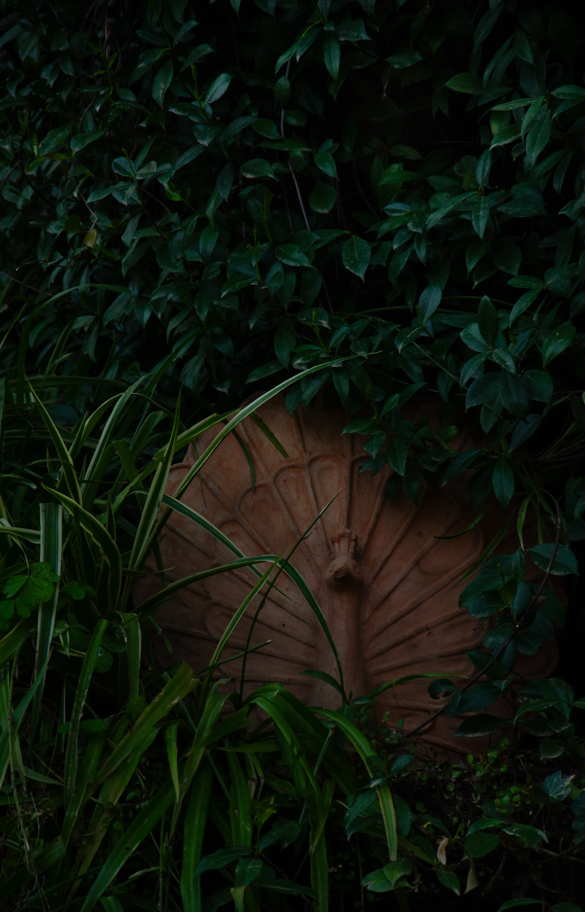

Where a green valley opens onto the sea, time moves differently. Olympos Lodge has stood here since 1987. Small enough to know your name. Large enough to lose yourself in.
Seventeen rooms among 20,000 square metres of garden, steps from one of the Mediterranean's most unspoiled beaches. A short walk from the ancient city that lends this coast its name. The garden, the beach, the restaurant — all of it exclusively for guests.
Days here unfold without agenda. Claim a cabana on the beach and let the morning pass. Take out a canoe and explore the coastline at your own pace — or have the concierge arrange a boat tour for something further. The front garden is the kind of place where a yoga mat or a book both make equal sense. Bicycles are there to explore Çıralı village and the roads beyond.
In the evening, firepits are lit — a place to gather, pour a drink, and let the conversation find its own current. And when the day asks for nothing at all, the private spa is there: jacuzzi, sauna, steam room — entirely yours.
A place stripped of the unnecessary
becomes something finer.


Bahçenin en eşsiz odası, ucunda müstakil bir yapı olarak konumlanmış. İç mekandaki şelale duvarı ve ayaklarınızın altında suyu gösteren bir sıra cam zemin paneli tonu belirliyor. Mimari ile doğa arasındaki sınır neredeyse ortadan kalkıyor.
Keşfet →
Her yönüyle ferah, Super Deluxe geniş özel terası aracılığıyla doğrudan ön bahçeye açılıyor; deniz ağaçların arasından süzülüyor. Jakuzi küvet uzun akşamlara davet ediyor. Dışarı çıkmak kadar içeride kalmak için de tasarlanmış bir oda.
Keşfet →

Tesisin geri kalanından ayrı konumlanan müstakil bir oda; terasın ötesinde bir gölet uzanıyor. Yüzeyi bahçenin ışığını, aydınlık gecelerde ise ayı ikiye katlıyor. Şömineli iç mekan, mahremiyetini mimarinin içine işlemiş olanlar için kendi başına yeten bir dünya tamamlıyor.
Keşfet →
Merkezde pirinç bir karyola; etrafında onlarca yılda özenle toplanmış antika mobilyalar ve zamanın ağırlığını taşıyan objeler. Bahçenin tamamen size ait hissettirdiği sessiz bir köşeye sığınmış, derin bir durgunluğa açılan terasla birleşiyor. Burada hiçbir şey dün gelmiş gibi görünmüyor.
Keşfet →
Sade çizgiler, çift kişilik yatak ve bahçe manzaralı özel teras. İhtiyacınız olan her şey var, araya giren hiçbir şey yok. Sadelik ile cömertliğin zıt olmadığını kanıtlayan bir oda.
Keşfet →Zümrüt yeşili bir vadiden geçerek bu yere vardı. Yol boyunca karşılaştığı güzellik, sessizce yüklerini bırakmasına izin verdi. Vadinin bir dere aracılığıyla denizle buluştuğu noktada, zaman onunla birlikte durdu.
O andan itibaren bir hayal başladı. Bugün hâlâ devam eden, hâlâ paylaşılan bir hayal.
Olympos Lodge bu hayalden doğdu. 20.000 m² bahçe içinde doğayla uyum halinde yerleştirilmiş on yedi oda. Her biri sade bir zarafetle döşenmiş; aydınlık ve dört mevsim yaşanabilir.


Olympos Lodge, bu yerin kendisinden öğrendi. Her yapı, arazinin izin verdiği yere saygıyla yerleştirildi — ağaçların arasına değil, ağaçlarla birlikte. Kökler yerinde kaldı, taşlar bozulmadı. Burada doğa bir arka plan değil, asıl mimardır.
Gece, ışık kirliliğinden uzak bu kıyıda gökyüzü nadiren görülen bir berraklıkla açılır. Sabah, deniz kokusu ormanın sesiyle iç içe geçer. Çıralı'nın deresi sessizce denize karışır — ve bir an için, dünyanın geri kalanının ne kadar gürültülü olduğunu anlarsınız.
"Bilen gelsin, bilmeyenlere anlatsın ve sadece meraklısını ağırlasın diye düşünülmüş gizli saklı bir dünya."
"Gerçek bir sığınak. Her şeyden tamamen uzaklaşıp daha yavaş, daha düşünceli ve daha huzurlu bir yaşam biçimine geçme fırsatı."
"Bu bahçede yürürken, zamanın gerçekten durduğunu hissettim. Her köşede huzur, her detayda özen."
Çıralı; korunan kıyısı, Olympos harabeleri ve Yanartaş'ın sönmeyen alevleriyle Akdeniz'in en özel köşelerinden biri.
Keşfet →

Olympos Lodge'da bir gün sade bir ritimle başlar. Açık büfe kahvaltı, bahçede huzur, plajda kabana ve akşam ateşi. Hepsi konaklamanıza dahil.
Keşfet →Torosların eteklerinden inen bir vadinin ucunda, sessiz bir kıyıda. Antik kalıntılar, yanmaya devam eden efsanevi alevler ve masmavi bir deniz.
Keşfet →